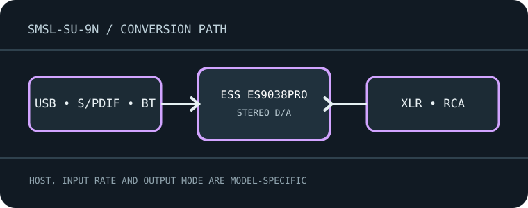

[ INDIVIDUAL MODEL // SOUND HARDWARE ]
SMSL SU-9n
Balanced desktop DAC with USB, optical/coaxial S/PDIF and Bluetooth inputs, feeding fixed or variable RCA/XLR outputs.

Model-specific specifications
| Exact model / architecture | ESS ES9038PRO stereo DAC with XMOS USB interface and separate analog output stage; no headphone amplifier or analog capture input. |
|---|---|
| Digital inputs / interface | USB, optical Toslink, coaxial S/PDIF and Bluetooth receiver. USB carries the high-rate native/DoP modes; S/PDIF and wireless have separate limits. |
| Analog / digital outputs | Balanced XLR and unbalanced RCA stereo outputs, selectable fixed or preamp/variable operation. |
| Supported formats and rates | USB PCM through 32-bit/768 kHz and DSD512 (native/DoP) per SMSL manual. Optical/coaxial PCM through 24-bit/192 kHz and DSD64 DoP where supported. Bluetooth is codec-limited; maximum sample rate follows the paired transmitter/codec. |
| Power | Internal AC mains supply; connect only to the voltage/frequency range on the unit label and manual. Do not connect an external DC adapter. |
| Drivers / host compatibility | USB audio computer support includes Windows, macOS and Linux as listed by SMSL; Windows may need the manufacturer USB driver for advanced rates/ASIO. Confirm device and output mode in the host/player. |
| Compatibility caveats | Verify SU-9n, not SU-9 or SU-9 Pro: their interfaces, firmware and features differ. Fixed/variable output setting and Bluetooth codec change behavior; use the SU-9n-specific manual. |
Compatibility & preservation
Verify SU-9n, not SU-9 or SU-9 Pro: their interfaces, firmware and features differ. Fixed/variable output setting and Bluetooth codec change behavior; use the SU-9n-specific manual.
- Record the exact product name, hardware revision, serial range, included power supply, firmware and driver version before service.
- Match digital sample format/rate to the selected physical input and host mode; set downstream amplifier level safely before playback.
- Keep the model-specific manufacturer manual with the device; connector shape alone does not guarantee electrical or protocol compatibility.
Manufacturer sources
- SU-9n manufacturer product pageManufacturer product documentation for the exact model and its revision-specific operation/specifications.
- Official SU-9n user manual (PDF)Manufacturer product documentation for the exact model and its revision-specific operation/specifications.